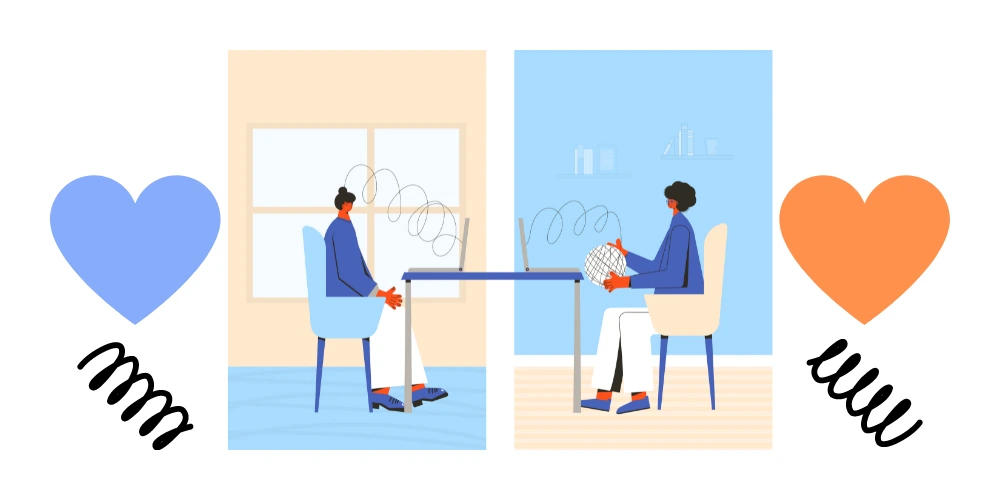
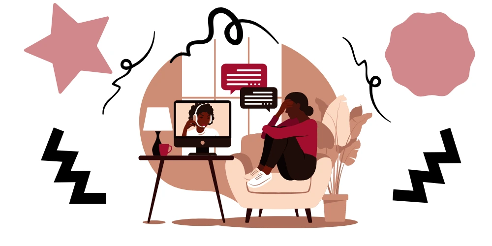

We all have worries, thoughts of uneasiness, things will not always go in our way. At times, life becomes extremely heavy to carry, to the point where all we think about problems. When thoughts of unhappiness become constant and if left unaddressed, some do spiral down to a state of deep depression. In Australia, we have the opportunity to find and be consulted by online/virtual therapists or psychologists and psychiatrists. An option that is particularly useful for people living in regional areas.

Solve our problems so that we are happy again.
Is it not normal to be worried, anxious, and unhappy? Of course, each of us will go through various stages of health and happiness, and then something will happen that will plunge us into a dark abyss in our lives. Most people will overcome this darkness, but for some, the sadness never seems to leave. What happens when you don’t know how to start to get better?
I think it’s normal to worry. After all, if we care about something or someone and feel that something is wrong, then worrying is normal. But what if all we do is just worry, what will happen? Sometimes we don’t know where to start to try to solve our anxiety or our problem? The number of choices available can become an obstacle. Sometimes when we don’t know exactly how or where to proceed to resolve our unhappiness, we withdraw from it all.
When this happens, where do we find help? A GP is a good place to start, so too is speaking with trusted friends and family or looking at reputable Australian websites. How do we choose an online/virtual therapist or psychologist in Australia that we need? Or should we see a psychologist in person; to begin to sort out the cause and root of our anxiety? After all, when unhappiness becomes a habit, it begins to affect our relationships, family life and work.

Here are the common mental health signs that we need to watch out for:
- Excessive fear.
- Unstoppable worrying, constant.
- Confusion and the inability to learn.
- Extreme changes in mood, uncontrollable highs and sudden lows.
- Irritability or anger for no apparent reason.
- Withdrawal from relatives and friends, the desire to constantly wanting to be alone.
- Erratic sleeping patterns.
- Increase of hunger or the extreme opposite, lack of appetite that goes on for days.
- Delusional or hallucinations.
- Unexplainable shifts from happiness to sadness throughout the day.
- Physical manifestations of illness, ranging from headaches to body pains.
- Suicidal thoughts or mention of self-harm.
- Routine daily activities seem to cease or lose their purpose for the person.
- Drastic changes in school or work performance.
- Hyperactivity, aggression or unusual disobedience.
Ultimately, it is best that we must be well informed so that regardless of the problems that life may throw at us, we know that we will be able to manage. But if we can’t, it is equally important that we seek help. One avenue that is increasingly available is online mental health support.
Online Psychologist or Psychiatrist in Australia
It is not always easy to distinguish between expected daily behaviours and signs or manifestations of mental health. Changes in people’s manners, behaviour, language and behaviour are all good indicators. Each mental illness does have its own symptoms and signs, but in general, any change that may cause red flags (similar to a person’s normal behaviour) is sufficient to identify an imbalance.
Once we are sure that we are indeed troubled, and if we find that we cannot solve the problem alone, the next step will be to find the best psychologist or psychiatrist in Australia. For those in regional areas, it may need to be an online therapist or a virtual psychologist. Perhaps, we only need to consult with people who can talk with us, people who are not in our circle and family, or people we know will provide us with the best “external view” professional assessment.
If that is the case, then a virtual psychologist (telepsychologist) or online therapist can definitely be our go-to person. However, if we deem that the problem is just too deep and we may need to slow down our thoughts, simmer down our emotions, perhaps we may need something to calm us (and there is nothing wrong with getting this type of help) then we may need to select telehealth option to see a telepsychiatrist for medical input. A telepsychiatrist or an online psychiatrist can diagnose our status and can provide options, medicines, that can help us get a hold of our thoughts, anxiety and mental stresses that birth into impulsive behaviour. Either way, both can provide the online mental health supports we need to stabilise our feelings, our thoughts and our frame of mind.
How to find an Online Psychologist?
When we find an online mental health provider (i.e., online psychologist or psychiatrist), suggestions from friends and family may be of value. However, nothing beats your own research. This can also be incredibly empowering. Research on what kind of help is available. When in search of or when seeking the best mental health care plan that is available out there for you, take into consideration education, training, years in practice, availability, location and also check whether they are an eligible telehealth medicare provider. Ask questions before you commit to any type of online mental health care plan. And remember that there is absolutely nothing wrong with wanting to be happy again.
Life, with all of its ups and downs, can be a bit turbulent at times. If the turbulence seems to not cease then we must be able to muster the strength and tell ourselves, “I need professional help because I am tired of being unhappy. I do not know what to do. I want to start over but I do not know where to begin.”
Check out this video by one of our clinicians on how to find the right Psychologist for some useful recommendations.